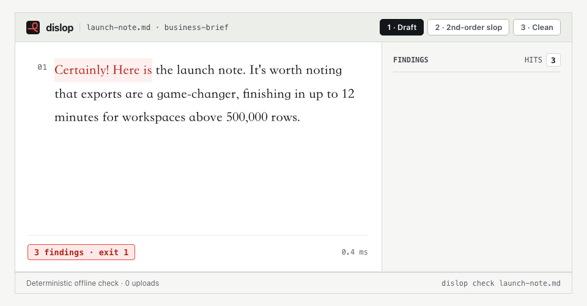
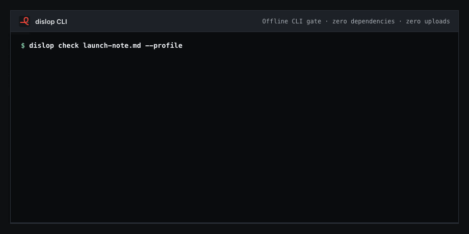
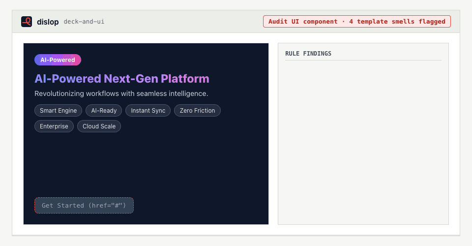

Cutting AI slop is real productivity.
A dedicated linter for AI slop. Flags leftover chat greetings, filler phrases, 'Not X, but Y' slogans, and stock template UI across docs, web pages, Word, and PowerPoint before you ship. Connects in one command and runs offline by default.
Read https://dislop.com/llms.txt, evaluate which dislop setup fits my environment and project (Skill, offline CLI, or Cloud MCP), install and configure it, and run a first check on our files.
Original
- Red: Stray chat reply on line one. Delete it.
- Blue: Filler opener and hype noun ('game-changer'). Say what changed instead.
Still sounds like AI
Cleaned up
Community rules and tools in one place
Bundles 53 rules, 12 extended pattern checks, and 90 curated anti-slop tools for docs, web UI, Word, and PowerPoint.
One command into agents and editors
Works with Codex, Claude Code, Cursor, WorkBuddy, and GitHub Actions, in the terminal, the editor, or CI.
Drafts stay on your machine
The Skill and CLI run offline with zero uploads. Switch the workbench or remote MCP to cloud mode when you want multi-model review.
Three ways to run dislop: Skill, local CLI, and Cloud MCP
Pick the one that matches your tools. Each comes with a copy-ready config.
-
Markdown-only Agent Skill
Writing and UI reference cards by genre, with no bundled scripts. Install it in Claude Code, Codex, Cursor, or Antigravity so the agent reads it before drafting and runs the local CLI afterward.
-
Open-source local CLI and plugins
Zero dependencies, under 250 KB, with all 7 scenario packs built in. Checks docs, Word, PowerPoint, and Git diffs offline in terminals, editors, and CI. You can also plug in your own model key.
-
Official Cloud MCP & web workbench
Connect from Claude Cowork, WorkBuddy, Qwen, or your editor. Sign in for 30 free credits a month and get multi-model review by genre with concrete edits.
https://dislop.com/mcp -
Let your agent set it up
Send dislop.com/llms.txt to your agent. It picks the Skill, CLI, or remote MCP, installs it, and runs a first check on your files.
# Markdown-only Agent Skill (no scripts) npx skills add dislop-ai/dislop # Offline CLI, Node or Python, all 7 packs, zero network npx --yes dislop check . uvx dislop check . # Pull request gate on changed lines only npx --yes dislop check --changed origin/main --format github # Official Cloud MCP endpoint https://dislop.com/mcp
Six short clips: prose, CLI, workbench, web UI, decks, and agent CI
Each clip runs about 7 seconds and is recorded offline from the real rules. Pick a scene, then pause, replay, or zoom in.






Six field guides: writing, web UI, decks, and setup
Each guide comes with copy-ready commands and before/after examples, grounded in public sources and real repository checks.
53 built-in rules across 7 scenario packs
Each rule pairs a deterministic probe with a check question and before / still-AI / clean examples.
| Pack ID | Name | What it catches | Rules |
|---|---|---|---|
core |
AI Delivery Artifacts | Clear AI-generation artifacts enabled across every pack: stray chatbot greetings, unfilled placeholders, raw Markdown pasted into Word/PowerPoint, and dead placeholder links/buttons in generated UI. | 4 rules |
business-brief |
Business Brief & Technical Proposal | Flags throat-clearing openers, bureaucratic padding, second-order negation pivots ('Not X, but Y'), staccato slogan chains, four-character triads, and unsourced claims. | 19 rules |
engineering-spec |
Engineering RFC, PR & Postmortem | Catches empty AI PR summaries, stop-thinking 'human error' postmortem labels, and unowned wishful action items alongside core and brief checks. | 3 rules |
regulated-comms |
External & Regulated Communications | Flags unsubstantiated absolute claims ('100% secure', 'zero risk') and floating hype multipliers ('10x faster' with no baseline) in external docs. | 2 rules |
literary-essay |
Literary Essay & Longform Narrative | Protects concrete observation and voice against moralizing paragraph endings, second-order negation pivots, em-dash saturation, and half-width Chinese punctuation. | 8 rules |
deck-and-ui |
Slide Deck, Web UI & Graphic Layout | Flags PowerPoint and PDF slide word-walls, autofit text shrink, generic titles, Web UI neon gradients, glow orbs, emoji chrome, icon-tile grids, SVG layout defects, and raster image AI workflow/palette slop. | 15 rules |
executive-deck |
Executive Slide Deck & Board Readout | Enforces conclusion-first slide headlines and flags monotonous multi-slide bullet skeletons on top of core deck and UI hygiene. | 2 rules |
Local tools stay free; cloud review uses credits
The Skill, CLI, and rules are Apache-2.0 and run offline. Cloud review, rewrites, and remote MCP use credits after sign-in: 30 free credits a month, and the paid model API never trains on your drafts.
Open Source Local (Skill + CLI)
$0 · Forever freeFor drafts that cannot leave your machine: offline setups, private repos, and internal docs. All code and rules are open source.
- Pure-Markdown Agent Skill (no scripts) & local CLI (Apache-2.0)
- All 7 domain packs (53 rules) bundled offline for Markdown, HTML/CSS/SVG, images, DOCX, PPTX & PDF
- Built-in 5-axis rhythm telemetry, 14.6 KB Pocket ML (
--ml) & offlinedislop voice - Zero network during check; developers can also plug in their own model key
Cloud Free (Remote MCP)
$0 · 30 credits / moSign in with a 6-digit email code, 1-click link, Google, or GitHub—no password or card—for the web workbench and Remote MCP.
- Connect
https://dislop.com/mcpvia zero-config OAuth 2.1 or API keys (up to 12,000 chars/call) - Cloud Review (1 credit): catches pitch cadence, filler, and clichés with concrete edits
- Cloud Rewrite (2 credits): plain rewrite that re-checks rules, numbers, and qualifiers
- Layout-preserving Word/PPT & voice profiles (2-3 credits): keeps formatting and syncs up to 3 voice cards
Pro · Credit Packs · Team
$12/mo · $10 PAYGOIf you write often, Pro costs 36% less per credit. If you only need it occasionally, credit packs never expire.
- Pro ($12/mo or $108/yr): 1,500 credits/mo (up to 50,000 chars/call) + 20 cloud voice cards
- PAYGO Pack ($10 / 800 credits): one-time purchase, never expires, unlocks 50,000 chars/call
- Team ($29/seat/mo): 5,000 credits/seat + 50 shared brand voice cards & PR review
- Paid-tier Google Gemini API only—no draft storage and never used for training
Awesome Anti-Slop: checked tools, guides, and papers
90 linters, writing skills, UI rules, PR policies, and papers, checked on 2026-11-21. 20 of them run automated checks.
Common questions
Does dislop upload my drafts when checking locally?
No. The pure-Markdown Skill, local CLI, editor plugins, and the default browser workbench run offline with zero uploads. Only explicit Cloud MCP or signed-in cloud buttons call our paid Google Gemini API tier without storing drafts.
How is dislop different from an AI text detector?
Probabilistic detectors give a single guess percentage without saying what to fix. dislop flags exact lines—leftover chat greetings, unfilled placeholders, second-order slogans, AI gradients, and dense PPTX slides—with edit checks.
Which coding and office agents can connect to dislop?
Claude Code, Codex, Cursor, Windsurf, Antigravity, GitHub Actions, and any client supporting Agent Skills or Streamable HTTP MCP at https://dislop.com/mcp.